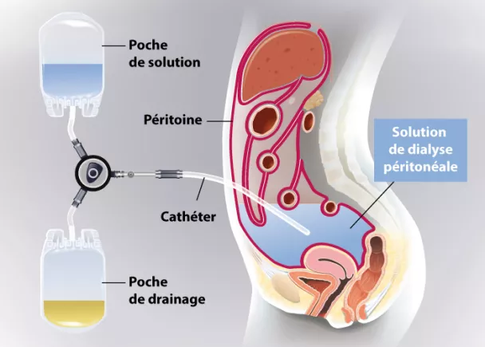
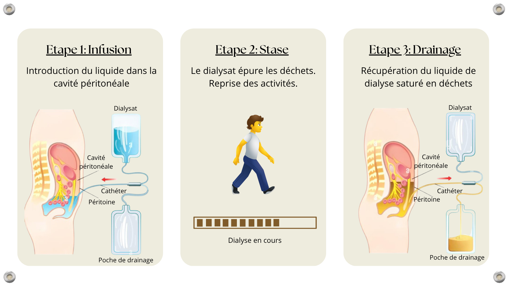
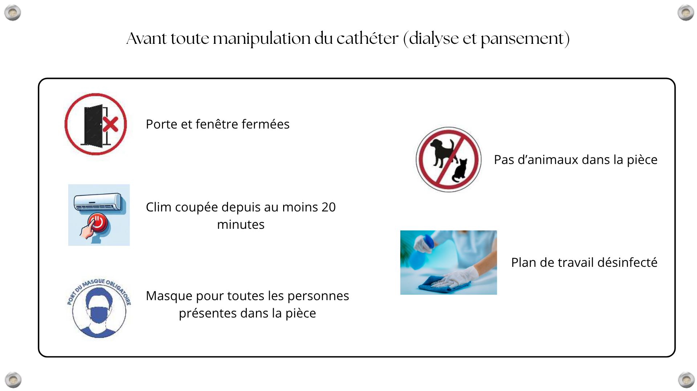
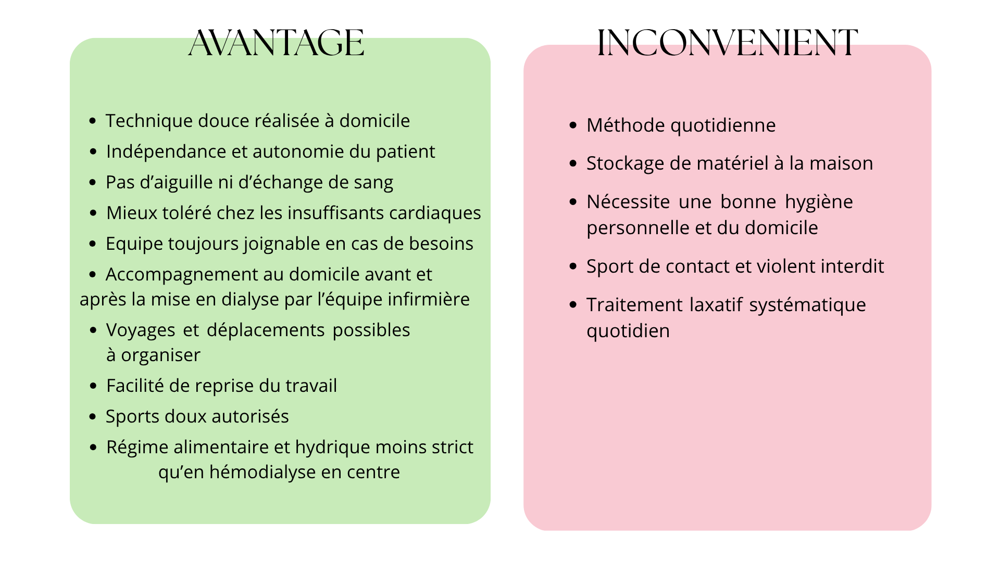

La dialyse péritonéale est un traitement qui permet de filtrer les déchets du sang lorsque les reins ne fonctionnent plus correctement. Elle utilise le péritoine, une fine membrane située dans le ventre, comme filtre naturel.
Un liquide appelé dialysat est introduit dans l’abdomen. Il reste quelques heures pour absorber les déchets et l’excès d’eau, puis est retiré et remplacé par un liquide neuf.
Ce traitement se fait à la maison, soit en autonomie après une formation, soit avec l’aide d’une infirmière libérale.
Schéma de la dialyse péritolnéale

Le cathéter et la préparation au traitement
Le cathéter est un petit tuyau souple qui permet de faire entrer et sortir le liquide de dialyse (dialysat) dans la cavité péritonéale. Il est posé au bloc opératoire, sous anesthésie.
Les premiers soins (pansements) et tests de dialyse sont réalisés ensuite en consultation. En général, le traitement commence à domicile environ un mois après la pose du cathéter, le temps que la zone cicatrise correctement.
Pendant cette période, les bains et douches sont interdits, et un traitement laxatif est souvent prescrit pour assurer un transit rapide, ce qui est important pour le bon déroulement de la dialyse.
Comment fonctionne la dialyse péritonéale ?
Le traitement en dialyse péritolnéale se fait suivant des cycles composés de 3 étapes :

DPCA et DPA : deux méthodes selon votre mode de vie
Il existe deux options de dialyse péritonéale, permettant de s’adapter à votre mode de vie et à vos activités quotidiennes :
La dialyse péritonéale continue ambulatoire(DPCA)
La dialyse péritonéale automatisée(DPA)
Informations utiles :
Tous les six mois, un bilan complet permet d’évaluer la qualité de la dialyse, avec un suivi diététique.
Assurez-vous des délais de livraison et veillez à toujours réaliser vos échanges dans de bonnes conditions d’hygiène.
En cas de problème, vous pouvez téléphoner a tout moment.
Le pansement doit être protégé et changé après la baignade.
Utilisez le réchauffeur fourni, vérifiez régulièrement votre stock, et retournez au centre tout matériel détérioré.
Assurez-vous que le lieu de dialyse reste toujours propre.
Prévention des infections

Que faire en cas de :
Difficultés de drainage ou d’injection
Liquide trouble
Liquide rosé
Suspicion d’infection de l’orifice du cathéter (émergence)
Douleurs en fin de drainage
Erreur de manipulation
Les + et les points de vigilance
